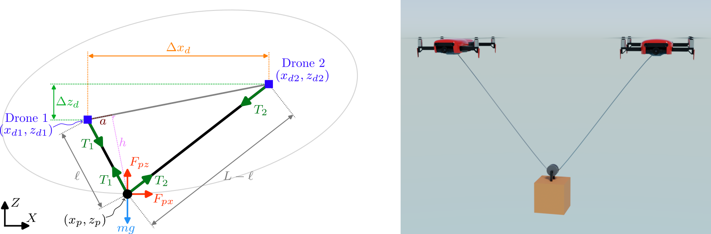
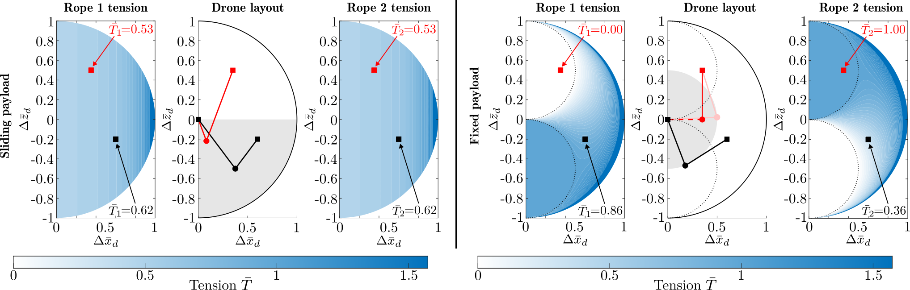
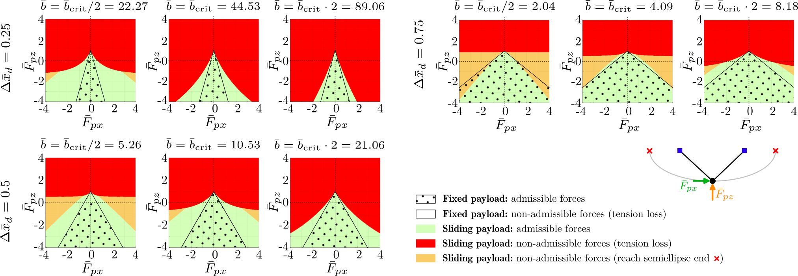

This paper analyzes the cooperative transportation of a payload suspended from two drones in which, instead of being attached to two independent ropes, the payload is allowed to slide along a single rope connecting both UAVs. First, a planar nondimensional dynamical model of the sliding motion with viscous friction is presented. Then, considering stationary drones, this configuration is compared with a fixed payload with the same total rope length, both at equilibrium and under disturbances. The analytical results show that the sliding payload equalizes the tension in both rope segments for any relative position of the drones, so that no rope loses tension at equilibrium; it doubles the region reachable by the payload and, except for low friction combined with a large drone separation, it enlarges the set of admissible disturbances. Finally, a dynamic simulation also shows that under realistic gusty wind profiles, the average tension imbalance between the drones is reduced with respect to the fixed-payload solution.
The idea of this work is to analyze, as a proof of concept, the effects of letting the payload slide along a single rope connecting both drones versus attaching it to two ropes with the same total length. Our objective is to see the sliding payload's effect on static and dynamic behavior by evaluating rope tensions and drone reaction forces at equilibrium and under payload disturbances. The transport of cargo suspended by ropes using drones is a topic currently under investigation, due to its advantages in distributing cargo among different drones and reaching areas that a drone carrying the cargo directly could not access. However, the most commonly used configuration today involves securing the payload with separate ropes for each drone. In this paper, we present a model in which there is only one rope and the payload can slide along it, taking into account the friction involved in that sliding motion.

To understand the fundamental behavior of this setup, we first evaluated the system at steady state without external forces. The comparison with traditional fixed cables revealed three major breakthroughs:

To analyze the response of both systems to step-type disturbances, we applied disturbances to both axes and observed the distribution of tensions and the influence of load sliding friction on the time it takes to reach steady state.
For both systems, we analyzed the magnitude of the disturbances they can withstand without losing tension in the ropes. To analyze this, we simulate the system's response to a step disturbance input for different geometric configurations. For each of these configurations, 160,000 combinations of disturbances are applied, and we analyze—for each simulation—whether the ropes remain taut, whether any of them lose tension, or, in the case of the sliding configuration, whether the load reaches the end of the lower semiellipse.
Low friction increases the risk of the payload sliding so far that it reaches the end of the lower semiellipse, while very high friction brings the system closer to the behavior of a fixed payload. Except for very low friction combined with large disturbances and a large separation between the drones, the region of admissible disturbances is larger with the sliding payload. In that exception, the payload slides so much that it reaches the end of the lower semiellipse for disturbances that a fixed payload would withstand.

The simulation results (similar to those shown in the video at the top of this page) demonstrate how allowing the load to reposition itself along the rope helps better balance the tensions in each rope and, consequently—if the drones are identical—better distribute the power each one must exert.
In summary, this study highlights three advantages of the sliding configuration over the fixed one:
Drawbacks of the sliding configuration include payload shifting along the cable, meaning its location is no longer purely geometric and requires controllers to use a more complex model incorporating friction. Additionally, this analysis simplified the system by neglecting dry friction.
This work is part of the projects NoRMMAS PID2024-159279OB-I00, COLLECTIVELY PID2022-139187OB-I00 and GO-HYBRID PID2024-156427OB-I00 funded by
It was founded also in part by the MICIU through the grant FPU24/01878, in part by the Government of Aragón - EU, via grant T77_26R.